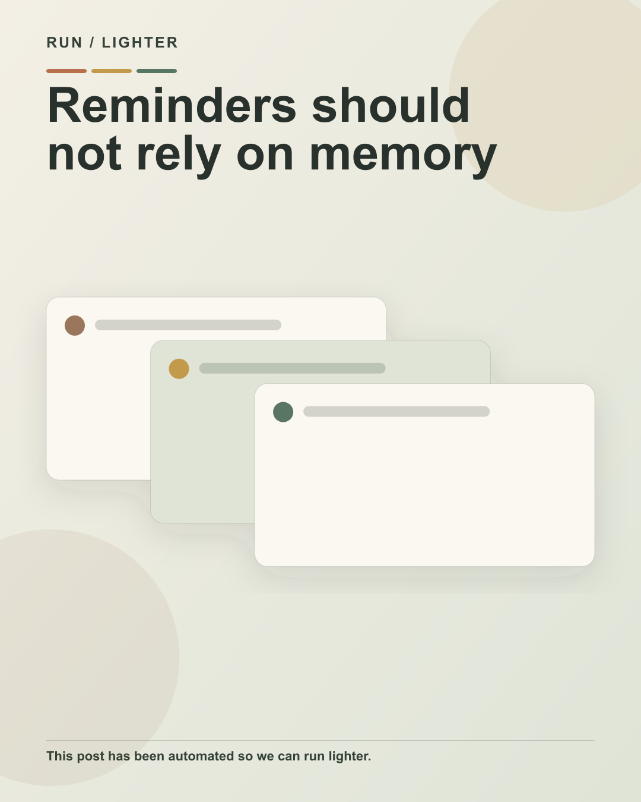

Reminders should not rely on memory
Practical automation · 1080 × 1350
Instagram caption
Reminders should not rely on memory
Routine appointment reminders work is spread across people and systems, creating checking, chasing and double handling. The answer is not to automate every decision. It is to separate the repeated movement from the moments that need context, judgement and a real conversation.
Start with one recent example. Map the trigger, the handovers, the systems touched and the person responsible for the next step. Then let approved rules handle the routine path and send exceptions to the right person.
This post has been automated so we can run lighter.
The workflow follows defined brand, quality and publishing rules, with human accountability kept in place.
Read the full article
#RunLighter #BusinessAutomation #SydneyBusiness #Operations
Creative brief
{
"content_id": "rl-2026-07-22-6b83d3c112",
"date": "2026-07-22",
"campaign_day": 1,
"audience": "Owners and operations leaders in established Sydney service businesses",
"problem": "Routine appointment reminders work is spread across people and systems, creating checking, chasing and double handling.",
"single_message": "Use automation for consistency and people for exceptions",
"supporting_points": [
"Map the real workflow before choosing technology",
"Automate repeated movement and rule-based actions",
"Keep exceptions, relationships and accountability human"
],
"desired_action": "Book an on-site automation review",
"topic": "appointment reminders",
"angle": "Use automation for consistency and people for exceptions",
"headline_options": [
"Reminders should not rely on memory",
"Use automation for consistency and people for exceptions",
"A lighter way to handle appointment reminders"
],
"selected_headline": "Reminders should not rely on memory",
"caption_hook_options": [
"Reminders should not rely on memory",
"Where does appointment reminders get stuck?",
"The hidden work around appointment reminders"
],
"selected_hook": "Reminders should not rely on memory",
"caption_cta": "Read the full article",
"visual_concept": "A workflow cards that makes the repeated steps and the human decision point visible",
"visual_format": "workflow-cards",
"image_generation_prompt": "Premium editorial still life illustrating appointment reminders in an Australian service business, earthy green and warm neutral palette, useful operational artefact, no people unless essential",
"overlay_copy": [
"Reminders should not rely on memory"
],
"article_outline": [
"The operational problem",
"Why the problem persists",
"A practical way to improve it",
"What remains human",
"Implementation considerations",
"Conclusion"
],
"primary_keyword": "appointment reminders automation",
"secondary_keywords": [
"scheduling",
"customers",
"follow-up",
"business automation",
"Sydney business"
],
"source_urls": [],
"promotion_hypothesis": "The appointment reminders problem is recognisable, the hook is direct and the visual can explain a practical improvement without hype.",
"risk_notes": [
"Do not imply staff replacement",
"Do not invent quantified outcomes",
"Keep human judgement explicit"
]
}Article preview
# Reminders should not rely on memory Repeated appointment reminders work rarely looks dramatic. It appears as a quick message, a copied field, a reminder added to a calendar or a status update sent to one more person. Each step is small. Together, those steps make a growing service business heavier to run and easier to interrupt. The practical question is not whether every part of appointment reminders can be automated. It is which repeated steps should happen reliably, which decisions still need a person and how the two should meet without creating more systems to manage. ## The operational problem In many owner-led businesses, the process lives across email, a spreadsheet, a customer system and the memory of the person who usually keeps things moving. That can work while the team is small and the volume is predictable. As the business grows, the same arrangement creates avoidable checking, chasing and double handling. The owner often becomes the safety net. When information is missing, a handover is unclear or a follow-up has not happened, the question returns to the same person. The issue is not effort. It is that the workflow has no clear trigger, owner or visible next step. ## Why the problem persists The work is usually spread across several small actions, so it is hard to see as one process. People improve their own part with templates, flags or personal reminders, but the handover between people and systems remains manual. Software can also hide the problem. A business may already have capable tools, yet still copy information between them because no one has designed the connection. Buying another platform before mapping the work can add another place to check without removing a single repeated step. There is also a sensible hesitation around automation. Teams know that customers, unusual situations and commercial decisions require judgement. That hesitation is useful. The answer is to define where judgement begins, not to leave every routine step manual. ## A practical way to improve it Start with one real example from the past week. Follow it from the first trigger to the final outcome. Write down what entered the process, who touched it, which systems were updated and what caused the next action. Then separate the workflow into three groups: 1. **Routine movement.** Information that can move between approved systems without interpretation. 2. **Rule-based action.** A reminder, task or acknowledgement that can happen when a clear condition is met. 3. **Human judgement.** A decision, exception or conversation where context and accountability matter. This simple division prevents two common mistakes. It stops the business from automating a decision that should remain human, and it stops staff from manually carrying information that a system could move consistently. Choose one narrow improvement. It might be creating the next task when a status changes, acknowledging a new enquiry, preparing a draft record from approved data or showing overdue actions in one view. Give the workflow an owner, define what success means and test it with the people who use it. ## What should remain under human judgement Automation should not decide how to handle an unusual customer, make an unreviewed commercial commitment or remove accountability from the person responsible for the outcome. It should make the normal path visible and bring exceptions to the right person with useful context. Relationships also stay human. A system can make sure a follow-up is not forgotten, but the quality of the conversation still belongs to the team. It can prepare information for review, but approval remains with the person who understands the consequences. The aim is not fewer people. It is less repeated work around the people, so their time goes into judgement, service and decisions. ## Implementation considerations Use the software already in place as the starting point. Confirm who owns the data, what permissions are required and what should happen when information is incomplete. Build a visible exception path before switching on the normal path. Keep a short audit trail. The business should be able to see what triggered the workflow, what action occurred and where a person intervened. Add a kill switch and test with a small group before expanding the scope. Review the workflow after it has handled real work. Ask whether it removed a repeated step, whether the handover became clearer and whether staff know what to do when something falls outside the rule. Expand only when the first improvement is genuinely useful. ## Automation note This post has been automated so we can run lighter. The content workflow follows approved Run Lighter brand rules, validation checks and publishing safeguards. Human accountability remains in place, and the system stops when a critical check fails. ## Run lighter, one process at a time The best first automation is rarely the biggest. It is the repeated, well-understood piece of work that can be made reliable without taking judgement away from the team. Book an on-site automation review. Run Lighter can visit your Sydney business, map the friction and identify a useful place to begin.